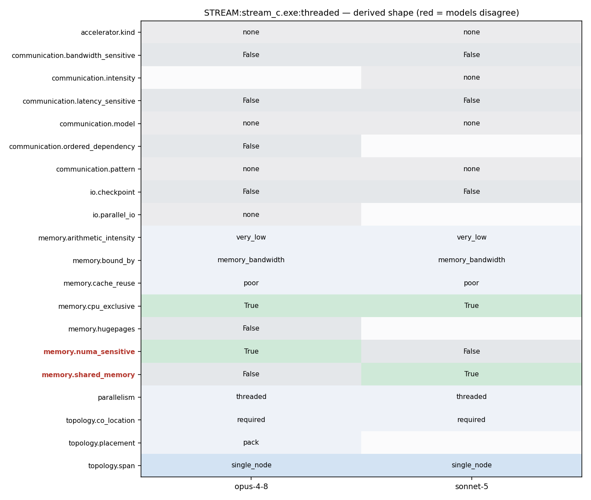

OMP_NUM_THREADS=N ./stream_c.exe
OMP_NUM_THREADS=N ./stream_c.exe (built via `make` from Makefile using gcc -fopenmp)
311 tuned_STREAM_Copy(); 312 #else 313 #pragma omp parallel for 314 for (j=0; j<STREAM_ARRAY_SIZE; j++) 315 c[j] = a[j]; 316 #endif 317 times[0][k] = mysecond() - times[0][k]; 318 319 times[1][k] = mysecond(); 320 #ifdef TUNED 321 tuned_STREAM_Scale(scalar); 322 #else 323 #pragma omp parallel for 324 for (j=0; j<STREAM_ARRAY_SIZE; j++) 325 b[j] = scalar*c[j]; 326 #endif 327 times[1][k] = mysecond() - times[1][k]; 328 329 times[2][k] = mysecond(); 330 #ifdef TUNED 331 tuned_STREAM_Add(); 332 #else 333 #pragma omp parallel for 334 for (j=0; j<STREAM_ARRAY_SIZE; j++)
90 * will override the default size of 10M with a new size of 100M elements 91 * per array. 92 */ 93 #ifndef STREAM_ARRAY_SIZE 94 # define STREAM_ARRAY_SIZE 10000000 95 #endif 96 97 /* 2) STREAM runs each kernel "NTIMES" times and reports the *best* result
1 =============================================== 2 3 STREAM is the de facto industry standard benchmark 4 for measuring sustained memory bandwidth. 5 6 Documentation for STREAM is on the web at: 7 http://www.cs.virginia.edu/stream/ref.html
39 /* 4. Use of this program or creation of derived works based on this */ 40 /* program constitutes acceptance of these licensing restrictions. */ 41 /* 5. Absolutely no warranty is expressed or implied. */ 42 /*-----------------------------------------------------------------------*/ 43 # include <stdio.h> 44 # include <unistd.h> 45 # include <math.h> 46 # include <float.h>
1 =============================================== 2 3 STREAM is the de facto industry standard benchmark 4 for measuring sustained memory bandwidth. 5 6 Documentation for STREAM is on the web at: 7 http://www.cs.virginia.edu/stream/ref.html
38 * This program measures sustained memory transfer rates in MB/s for 39 * simple computational kernels coded in FORTRAN. 40 * 41 * The intent is to demonstrate the extent to which ordinary user 42 * code can exploit the main memory bandwidth of the system under 43 * test. 44 *======================================================================= 45 * The STREAM web page is at: 46 * http://www.streambench.org
56 * You should adjust the value of 'STREAM_ARRAY_SIZE' (below) 57 * to meet *both* of the following criteria: 58 * (a) Each array must be at least 4 times the size of the 59 * available cache memory. I don't worry about the difference 60 * between 10^6 and 2^20, so in practice the minimum array size 61 * is about 3.8 times the cache size. 62 * Example 1: One Xeon E3 with 8 MB L3 cache 63 * STREAM_ARRAY_SIZE should be >= 4 million, giving 64 * an array size of 30.5 MB and a total memory requirement
53 * 1) STREAM requires different amounts of memory to run on different 54 * systems, depending on both the system cache size(s) and the 55 * granularity of the system timer. 56 * You should adjust the value of 'STREAM_ARRAY_SIZE' (below) 57 * to meet *both* of the following criteria: 58 * (a) Each array must be at least 4 times the size of the 59 * available cache memory. I don't worry about the difference 60 * between 10^6 and 2^20, so in practice the minimum array size 61 * is about 3.8 times the cache size. 62 * Example 1: One Xeon E3 with 8 MB L3 cache 63 * STREAM_ARRAY_SIZE should be >= 4 million, giving 64 * an array size of 30.5 MB and a total memory requirement
245 246 #ifdef _OPENMP 247 printf(HLINE); 248 #pragma omp parallel 249 { 250 #pragma omp master 251 { 252 k = omp_get_num_threads(); 253 printf ("Number of Threads requested = %i\n",k); 254 } 255 } 256 #endif 257 258 #ifdef _OPENMP 259 k = 0; 260 #pragma omp parallel 261 #pragma omp atomic 262 k++; 263 printf ("Number of Threads counted = %i\n",k); 264 #endif 265 266 /* Get initial value for system clock. */
245 246 #ifdef _OPENMP 247 printf(HLINE); 248 #pragma omp parallel 249 { 250 #pragma omp master 251 { 252 k = omp_get_num_threads(); 253 printf ("Number of Threads requested = %i\n",k); 254 } 255 } 256 #endif 257 258 #ifdef _OPENMP 259 k = 0; 260 #pragma omp parallel 261 #pragma omp atomic 262 k++; 263 printf ("Number of Threads counted = %i\n",k); 264 #endif 265 266 /* Get initial value for system clock. */
1 CC = gcc 2 CFLAGS = -O2 -fopenmp 3 4 FC = gfortran 5 FFLAGS = -O2 -fopenmp
201 extern void tuned_STREAM_Add(); 202 extern void tuned_STREAM_Triad(STREAM_TYPE scalar); 203 #endif 204 #ifdef _OPENMP 205 extern int omp_get_num_threads(); 206 #endif 207 int 208 main() 209 {
310 #ifdef TUNED 311 tuned_STREAM_Copy(); 312 #else 313 #pragma omp parallel for 314 for (j=0; j<STREAM_ARRAY_SIZE; j++) 315 c[j] = a[j]; 316 #endif 317 times[0][k] = mysecond() - times[0][k]; 318 319 times[1][k] = mysecond(); 320 #ifdef TUNED 321 tuned_STREAM_Scale(scalar); 322 #else 323 #pragma omp parallel for 324 for (j=0; j<STREAM_ARRAY_SIZE; j++) 325 b[j] = scalar*c[j]; 326 #endif 327 times[1][k] = mysecond() - times[1][k]; 328 329 times[2][k] = mysecond(); 330 #ifdef TUNED 331 tuned_STREAM_Add(); 332 #else 333 #pragma omp parallel for
245 246 #ifdef _OPENMP 247 printf(HLINE); 248 #pragma omp parallel 249 { 250 #pragma omp master 251 { 252 k = omp_get_num_threads(); 253 printf ("Number of Threads requested = %i\n",k); 254 } 255 } 256 #endif 257 258 #ifdef _OPENMP 259 k = 0; 260 #pragma omp parallel 261 #pragma omp atomic 262 k++; 263 printf ("Number of Threads counted = %i\n",k); 264 #endif 265 266 /* Get initial value for system clock. */ 267 #pragma omp parallel for 268 for (j=0; j<STREAM_ARRAY_SIZE; j++) {
245 246 #ifdef _OPENMP 247 printf(HLINE); 248 #pragma omp parallel 249 { 250 #pragma omp master 251 { 252 k = omp_get_num_threads(); 253 printf ("Number of Threads requested = %i\n",k); 254 } 255 } 256 #endif 257 258 #ifdef _OPENMP 259 k = 0; 260 #pragma omp parallel 261 #pragma omp atomic 262 k++; 263 printf ("Number of Threads counted = %i\n",k); 264 #endif 265 266 /* Get initial value for system clock. */ 267 #pragma omp parallel for 268 for (j=0; j<STREAM_ARRAY_SIZE; j++) {
1 CC = gcc 2 CFLAGS = -O2 -fopenmp 3 4 FC = gfortran 5 FFLAGS = -O2 -fopenmp
31 operation even when multiple MPI ranks run on 32 shared memory systems. 33 34 NOTE: MPI is not a preferred implementation for 35 STREAM, which is intended to measure memory 36 bandwidth in shared-memory systems. In stream_mpi, 37 the MPI calls are only used to properly synchronize 38 the timers (using MPI_Barrier) and to gather 39 timing and error data, so the performance should